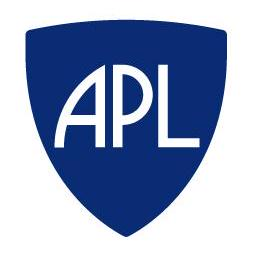

'">Johns Hopkins Applied Physics Laboratory
Autonomous Systems Design Engineer Internship
Role Focus
This role is about designing autonomy that holds up in the real world: messy sensors, limited compute, hard timing constraints, and field-driven requirements.
My focus is contributing across the autonomy stack—perception, estimation, planning, and integration—while keeping the system testable, safe, and deployable.
- Perception & State Estimation: Turn raw sensors into robust state (filtering, latency awareness, uncertainty, failure cases).
- Autonomy & Decision Logic: Implement and validate behaviors (planning, control handoffs, constraints, safety interlocks).
- Integration & Test: Build repeatable test evidence in simulation + HIL, then close the loop with real system data.
Autonomy Loop // Sense → Estimate → Decide → Act
>> What I Contribute
>> Typical Flow
Deliverables & Interview Signals
The goal is to demonstrate I can build autonomy that is measurable and test-backed—not just “works on my machine.”
- Clear problem framing: constraints, inputs/outputs, and failure modes.
- Evidence-driven iteration: logs, metrics, and controlled changes.
- Integration mindset: interface contracts, timing, and safety gates.
- Validation: simulation → HIL → real-world tests.
Note: Content is intentionally high-level and non-sensitive.
Skills & Tools
What I Optimize For
- Robustness: handles noise, delays, and edge cases.
- Evidence: metrics + logs over vibes.
- Safety: clear constraints and interlocks.
- Deployability: testable interfaces + repeatable runs.
One-Line Summary
I build autonomy that survives real-world constraints by combining perception, estimation, and test-backed integration.